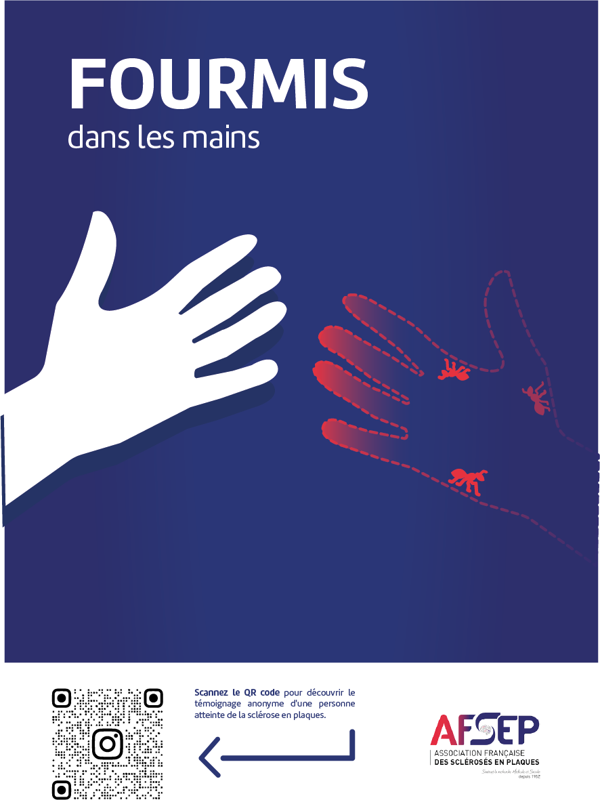

Sensibilisation et prévention à la sclérose en plaques
Dans le cadre d'un projet de sensibilisation à la sclérose en plaques, j'ai souhaité mettre en lumière les symptômes de cette maladie, qui ne sont pas toujours bien connus ou reconnus.
Le projet s'adresse à tous, avec une attention particulière portée aux jeunes adultes, puisque les premiers symptômes apparaissent le plus souvent entre 25 et 30 ans. L'objectif est de les aider à mieux identifier certains signes de la maladie, mais aussi de mieux comprendre le quotidien des personnes atteintes.
Pour commencer, j'ai pris contact avec plusieurs personnes atteintes de sclérose en plaques, qui m'ont partagé leurs témoignages personnels. Lors de mes échanges avec l'une d'entre elles, membre de l'AFSEP (Association Française des Sclérosés en Plaques), elle m'a fait part de son envie de participer à la sensibilisation en partageant son propre témoignage. C'est à partir de cet échange qu'est née l'idée de réaliser une animation en motion design, proposée à l'AFSEP, tout en préservant son anonymat grâce à une silhouette.
Ce choix permet de mettre en avant son vécu sans montrer son identité, mais aussi de laisser chacun s'identifier plus facilement à la personne représentée.
Pour accompagner cette animation, j'ai proposé des affiches contenant des QR codes qui renvoient directement vers celle-ci. Elles ont été imaginées pour être installées dans des lieux fréquentés par les jeunes adultes, comme les lycées, les universités ou les salles d'attente.
L'objectif est de rendre l'animation facilement accessible et de sensibiliser davantage de personnes à la maladie.


Adobe Illustrator, After Effects et InDesign